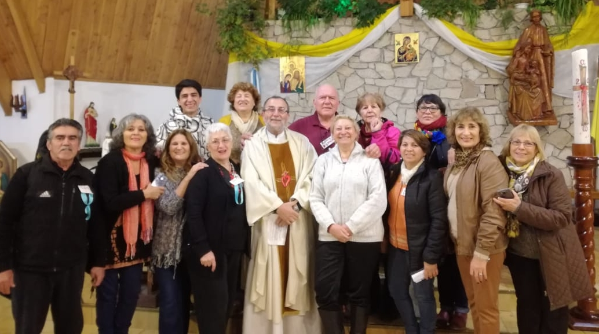
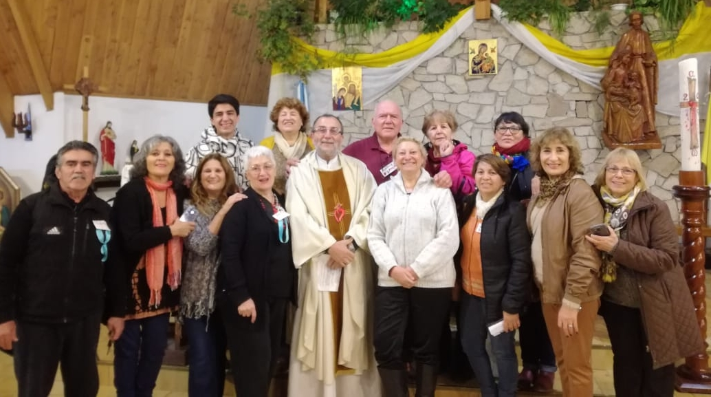

Actividades

 


"Grupo de Oración"
"NO SE ANGUSTIEN POR NADA, Y CUALQUIER CIRCUNSTANCIA,
RECURRAN A LA ORACIÓN Y SÚPLICA, ACOMPAÑADAS DE ACCIÓN DE GRACIAS,
PARA REPRESENTAR SUS PETICIONES A DIOS.
ENTONCES LA PAZ DE DIOS QUE SUPERA TODO LO QUE PODEMOS PENSAR,
TOMARA BAJO SU CUIDADO LOS CORAZONES
Y LOS PENSAMIENTOS DE USTEDES EN CRISTO JESÚS". Filipenses: 4;6-7
"los dias 1ro y 3er Martes de cada mes 16.30 a 18hs en la sede de Salom 446 Timbre 1"
Los actos de fe, esperanza y caridad que ordena el primer mandamiento se realizan en la oración.
La elevación del espíritu hacia Dios es una expresión de nuestra adoración a Dios;
oración de alabanza y de acción de gracias, de intercesión y de súplica.
La oración es una condicion indispensable para poder obedecer los mandamientos de Dios.
"Es preciso orar siempre sin desfallecer"(Lc 18.1) Catecismo de la Iglesia Católica

"JORNADAS VARIAS"
"VAYAN POR TODO EL MUNDO Y ANUNCIEN LA BUENA NUEVA A TODA LA CREACIÓN" Mc:16,20
"Alma Fuerte- Cordoba, Gral Pico-La Pampa, Moreno Gran Bs As y otros"


"Jornada Fuente de Agua Viva" - Moreno 2018
"NO ME AVERGUENZO DEL EVANGELIO, PORQUE ES LA FUERZA DE DIOS PARA LA SALVACIÓN DE TODOS LOS QUE CREEN" ROM:1,16
ANIVERSARIO (Fundación)
"DEN GRACIAS AL SEÑOR, INVOQUEN SU NOMBRE;
DEN A CONOCER SUS OBRAS ENTRE LAS NACIONES" Salmo 105:1


- RETIRO ANUAL DE LA FUNDACIÓN
"BENDITO SEA DIOS, PADRE DE NUESTRO SEÑOR JESUCRISTO, PADRE DE LA MISERICORDIAS Y DIOS DE TODOS CONSUELO, QUE NOS CONFORTA EN TODAS NUESTRAS TRIBULACIONES, PARA QUE NOSOTROS PODAMOS DAR A LOS SUFREN EL MISMO CONSUELO QUE RECIBIMOS DE DIOS". 2Corintios:1;3-4


- SALIDA COMUNITARIA
"EDIFICAR COMUNIDADES ECLESIALES, QUE SEA CADA VEZ MAS FAMILIAS,
CAPACES DE EVANGELIZAR NO SOLO CON LAS PALABRAS,
SINO CON LA FUERZA DEL AMOR DE DIOS QUE HABITA EN NOSOTROS.
ESTAMOS LLAMADOS A VIVIR LOS UNOS CON LOS OTROS,
POR LOS OTROS Y EN LOS OTROS".
Papa Francisco 31/05/15

Volver arriba